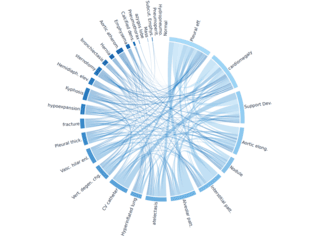
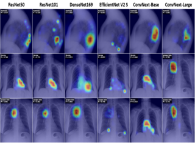
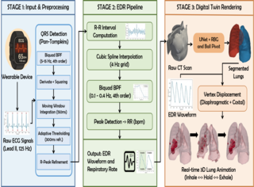
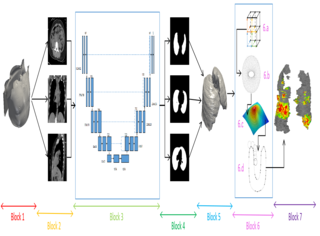
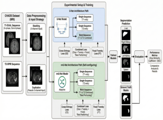
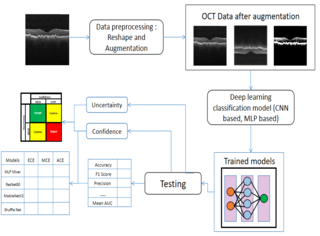
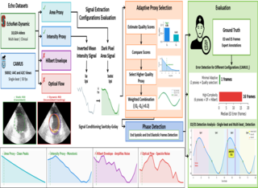
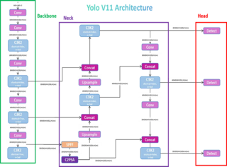
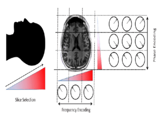

Research
This page collects my current research publications and preprints across computer vision, medical imaging, multimodal learning, and clinically oriented deep learning. The work spans chest X-ray classification, long-tailed recognition, lung CT segmentation, histopathology image analysis, echocardiography, retinal OCT, and responsible AI topics such as LLM privacy.
Featured research pages include CXR-LT, TARU-Net, CIPS-Net, ECG-Free Echo, and Lung Digital Twin.
Publications
-
Medical Image Analysis

-
Preprint 2026

-
MICCAI 2026

CIPS-Net: A Comprehensive Framework for Histopathology Image Analysis
29th Medical Image Computing and Computer Assisted Intervention (MICCAI), 2026 [*Under Review]
-
MICCAI 2026

Digital Twin of the Lung from Wearable Biosignals for Real-Time Respiratory Monitoring
29th Medical Image Computing and Computer Assisted Intervention (MICCAI), 2026 [*Under Review]
-
IEEE TRPMS

IEEE Transactions on Radiation and Plasma Medical Sciences [*Under Review]
-
IEEE CONNECT 2026
12th IEEE International Conference on Electronics, Computing and Communication Technologies 2026 [*Under Review]
-
IEEE GCON 2026

IEEE Guwahati Subsection Conference (GCON) 2026
-
IEEE GCON 2026

IEEE Guwahati Subsection Conference (GCON) 2026
-
BSPC Journal

Biomedical Signal Processing and Control [*Under Review]
-
Preprint 2026

YOLOv11 Architecture Explained: Next-Level Object Detection with Enhanced Speed and Accuracy
Medium, Analytics Vidhya, 2024 · Accepted at CVC 2026
-
Preprint 2025

† Equal contribution
Ongoing Research Projects
- HuMAR - Working on developing efficient and scalable text-instructed vision-language model for multimodal and multitasking Human Centric detection.
- Novel Segmentation and Denoising Architectures - Working on developing of novel self supervised models for multitasking and rigorous experiments on various OCT datasets.
- Bone Cancer Detection - Generaly Whole Genome Sequencing is the gold standard for detection costing $6k per patient, so we are working on a method to detect the bone cancer from the H&E whole slide images.
- Whole Genome Doubling - WGD is one of the somatic events of cancer, detecting it takes very long time using sequencing, hence we are developing a methdology on detecting the WGD from the H&E WSI's.
Services and Contributions
-
Reviewer for European Journal Of Computer Sciences And Informatics, 2025
Research Competitions
- Top 5 - CXR-LT 2026 Challenge on Long-Tailed Chest X-ray Classification Benchmark, ISBI 2026
- Top 10 - Track 1, IEEE EMBS Biomedical & Health Informatics (BHI) Conference Data Competition, 2025
- Top 22 - Multimodal AI4TB Challenge (MAIC), Seoul National University Hospital, 2024
- Top 3 - Intel AI Hackathon 2024, IEEE Indicon at IIT Kharagpur, 2024